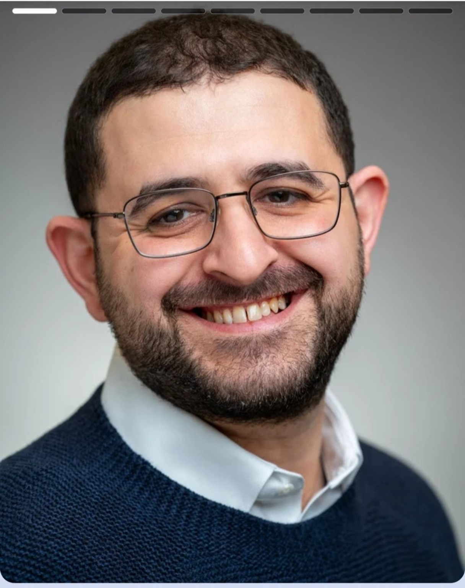

Or Goldreich
PhD Candidate in Statistics
University of Chicago
My research studies the convergence, stability and statistical properties of stochastic optimization, with a particular focus on how learning-rate schedules and gradient noise shape stochastic gradient descent.
My broader interests include concentration inequalities, high-dimensional statistics and probabilistic modeling. Alongside theoretical research, I build applied forecasting projects that connect statistical methods with reproducible computation.
